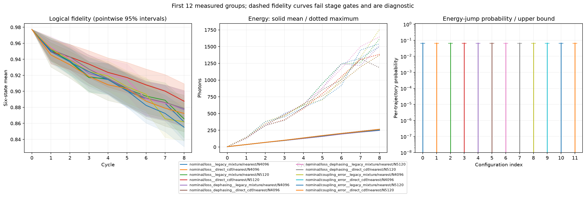

16/16 jobs executed. Classification: benchmark_observations. Numerical certification requires scoring, cutoff and independent-instrument checks in addition to stage gates.

Plots show up to12 measured groups; all groups are in JSON/CSV. Results after failed numerical gates are diagnostic. Intervals on incomplete groups are interim descriptions.
| Configuration | Chunks | Stage gates | Final mean fidelity |
|---|---|---|---|
| nominal/loss__legacy_mixture/nearest/N4096 | 1/1 | pass | 86.1743% |
| nominal/loss__direct_cdf/nearest/N4096 | 1/1 | pass | 88.7632% |
| nominal/loss__legacy_mixture/nearest/N5120 | 1/1 | pass | 86.5552% |
| nominal/loss__direct_cdf/nearest/N5120 | 1/1 | pass | 88.7632% |
| nominal/loss_dephasing__legacy_mixture/nearest/N4096 | 1/1 | pass | 87.7131% |
| nominal/loss_dephasing__direct_cdf/nearest/N4096 | 1/1 | pass | 87.8592% |
| nominal/loss_dephasing__legacy_mixture/nearest/N5120 | 1/1 | pass | 87.8714% |
| nominal/loss_dephasing__direct_cdf/nearest/N5120 | 1/1 | pass | 87.8592% |
| nominal/coupling_error__legacy_mixture/nearest/N4096 | 1/1 | pass | 86.1926% |
| nominal/coupling_error__direct_cdf/nearest/N4096 | 1/1 | pass | 87.2377% |
| nominal/coupling_error__legacy_mixture/nearest/N5120 | 1/1 | pass | 85.5104% |
| nominal/coupling_error__direct_cdf/nearest/N5120 | 1/1 | pass | 87.2377% |
| nominal/control_rotation__legacy_mixture/nearest/N4096 | 1/1 | pass | 88.0883% |
| nominal/control_rotation__direct_cdf/nearest/N4096 | 1/1 | pass | 88.0947% |
| nominal/control_rotation__legacy_mixture/nearest/N5120 | 1/1 | pass | 88.0863% |
| nominal/control_rotation__direct_cdf/nearest/N5120 | 1/1 | pass | 88.0947% |
Counts, fixed-budget intervals and completeness · Frozen plan